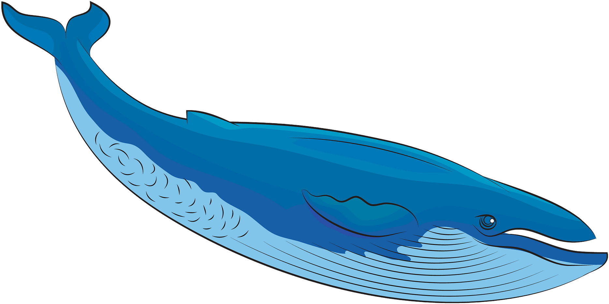
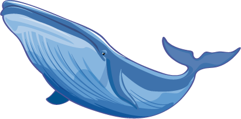
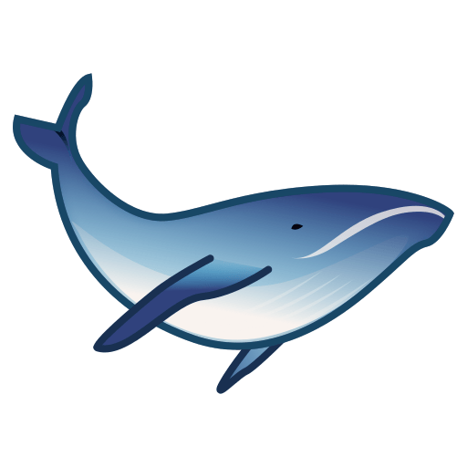

En esta seccion hablare de mis objetivos y metas
Les comparto un poco de mis pequeñas metas a largo y a corto plazo En mi infancia llegue a tener muchas metas y propositos como muchos de nosotros de pequeños, desde ser biologa marina hasta ser vaquera, pero actualmente mi proposito y sueño mas grande es poner un refugio de animales y con este proposito me gustaria estuduar para veterinaria o seguir con mi sueño de peuqña y ser una biologa marina y ir viistando y poder estudiar a diferentes especies
  Me encantaria compartir metas a corto plazo, como lo es terminar mi prepa y poder salir con altas calificaciones y poder honrrar a mis padres y abuelos con esos logros, tambien me encantaria destacar en deportes y poder ir a competencias nacionales y representar grupos